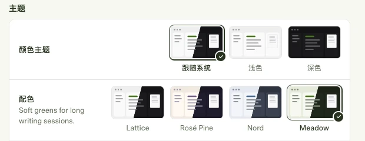

制作主题
主题给 Lattice 换配色。它是数据，不是代码：一个 .lattice-theme.json 文件，为 Lattice 的设计角色（例如窗口、编辑器、文字和强调色）指定颜色。其他颜色（悬停、按下、选中时的底色）都由 Lattice 根据这些颜色推算，所以主题在各种状态下都保持一致。主题改不了尺寸、字体或行为，也不能运行任何东西，所以安装主题不需要任何权限，并且所有平台都能用。
1. 编写主题文件
新建 meadow.lattice-theme.json：
{
"$schema": "https://leo1oel.github.io/lattice-plugins/schema/theme-1.json",
"schema": 1,
"id": "io.github.yourname.meadow",
"name": "Meadow",
"version": "1.0.0",
"author": "Your Name",
"license": "MIT",
"description": "Soft greens for long writing sessions.",
"variants": [
{
"id": "day",
"name": "Meadow Day",
"appearance": "light",
"colors": {
"window": "#eef2e6",
"chrome": "#e4eadb",
"panel": "#f6f8f1",
"editor": "#fbfcf8",
"text": "#27331f",
"text-secondary": "#56624c",
"line": "#27331f1f",
"accent": "#4f7a28"
},
"syntax": { "keyword": "#4f7a28", "comment": "#6f7a66" }
},
{
"id": "night",
"name": "Meadow Night",
"appearance": "dark",
"colors": {
"window": "#161b13",
"chrome": "#1c2318",
"panel": "#20281b",
"editor": "#1a2016",
"text": "#e3ead8",
"text-secondary": "#a9b49c",
"line": "#e3ead81f",
"accent": "#9cc56b"
}
}
]
}
$schema 这一行让 VS Code 等编辑器在你输入时检查文件、补全角色名。
id是反向域名、全小写，属于你自己，和插件一样。app.lattice.*属于 Lattice 自带的主题。- 变体： 1 到 8 个，每个是
light或dark。Lattice 使用第一个与窗口外观相符的变体；只有深色变体时，浅色外观保持 Lattice 自己的配色。 - 颜色只能是字面值
#RRGGBB或#RRGGBBAA。 不能用颜色名、var()或其他函数。线条通常是半透明的，如上例。 - 每个角色都是可选的。 没写的角色沿用 Lattice 在该外观下的颜色，所以一个主题可以小到只有两个表面色和一个强调色。
- 未知的角色是错误。文件最大 256 KiB。
角色
| 部分 | 角色 |
|---|---|
colors，表面 |
window、chrome、panel、raised、input、editor、pdf-ground |
colors，文字 |
text、text-secondary |
colors，线条 |
line、line-strong |
colors，强调 |
accent、focus、selection |
colors，状态 |
danger、success、warning、info、annotation |
syntax |
编辑器的 16 种语法颜色，例如 keyword、command 和 comment |
terminal |
black … white 和 bright-black … bright-white |
Lattice 会保证文字可读：文字、状态和语法颜色在其背景上达不到 4.5:1 对比度时，会在保持色相的前提下调整到够为止，强调色则保证 4.6:1。只有经过大幅校正才可读的主题看起来会不对劲，所以请自己检查配色。完整的角色列表见 docs/themes.md（英文）和 JSON Schema。
2. 在 Lattice 中试用
- 打开 设置 › 外观。在 主题 下的 主题文件 旁边选择 从文件安装…，选中
meadow.lattice-theme.json。 - Lattice 安装后会直接选中它：Meadow 出现在 配色 中并被勾选，旁边显示它的描述。把 颜色主题 在 浅色 和 深色 之间切换，查看两个变体。
Lattice 在安装时会检查文件，并指出哪里不对，例如未知的角色。它会保存一份副本，所以修改文件之后，要再安装一次才能看到变化。

3. 发布
主题和插件走同一个注册表，条目更简单。注册表的地址列在 注册表地址。
把主题文件和许可证放进一个公开的 GitHub 仓库（这里是
https://github.com/yourname/lattice-theme-meadow），给提交打标签：git tag v1.0.0 git push origin v1.0.0计算已提交文件的哈希。主题不需要打包，哈希就是文件本身的：
shasum -a 256 meadow.lattice-theme.json在注册表的 fork 里添加
themes/<id>/entry.json，这里是themes/io.github.yourname.meadow/entry.json：{ "id": "io.github.yourname.meadow", "version": "1.0.0", "repository": "https://github.com/yourname/lattice-theme-meadow", "tag": "v1.0.0", "commit": "<the full 40-character sha the tag points at>", "path": "meadow.lattice-theme.json", "sha256": "<what shasum printed>" }id和version与主题文件一致，文件夹名等于id，path是该文件在仓库里的路径。和 插件 一样，在 fork 里运行
npm ci和node scripts/validate.mjs --base origin/main。新主题会打印ok themes/io.github.yourname.meadow/entry.json和note: new theme: needs a human review (first submission)。开 pull request，填写检查清单中主题的部分。
CI 只拉取你的标签，要求它指向 commit，从该提交读取 path 处的文件（必须是普通文件，最大 256 KiB），核对它的 SHA-256，按 schema 校验，并检查它的 id 和 version 与条目一致、变体 id 不重复。
然后审核者会问：
- id 或名称是否在冒充他人？
- 描述是否准确，许可证是否齐全，仓库是否真实且公开？移植的配色要注明原作者并保留其许可证。
- 是否可读？只有经过 Lattice 对比度校正才能用的主题会被拒绝。
- 是否只是数据？不能有字体、图片或 schema 之外的内容。
合并后，主题会像插件一样随下一次索引签名发布（见 签名），出现在 设置 › 外观 › 浏览主题… 中。那里的预览色块是根据索引绘制的，所以用户点 安装 之前不会下载任何东西。
更新与紧急停用
更新主题时，在文件里升高 version，给新提交打标签，再修改条目里的 version、tag、commit 和 sha256。版本只能升高。从 浏览主题 安装过的用户会收到更新提示，更新后仍保持他们选中的主题。
注册表的 紧急停用开关 同样适用于主题。用户选中的某个版本被 "disable" 停用时，Lattice 改用自己的配色，同时保留用户的选择，并在 设置 › 外观 中显示“<名称> 已被停用：<原因>”。"warn" 条目会让主题继续生效，并在那里显示警告。从文件安装的主题永远不会被停用。